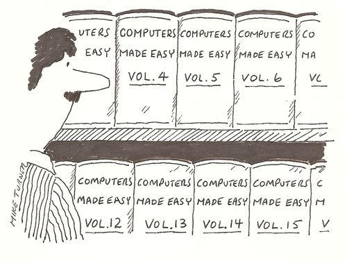
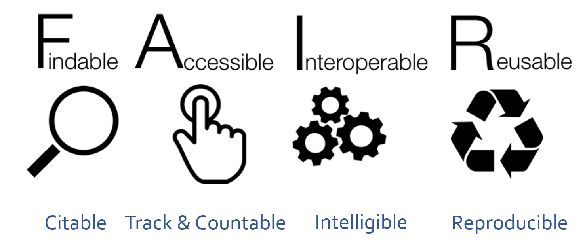
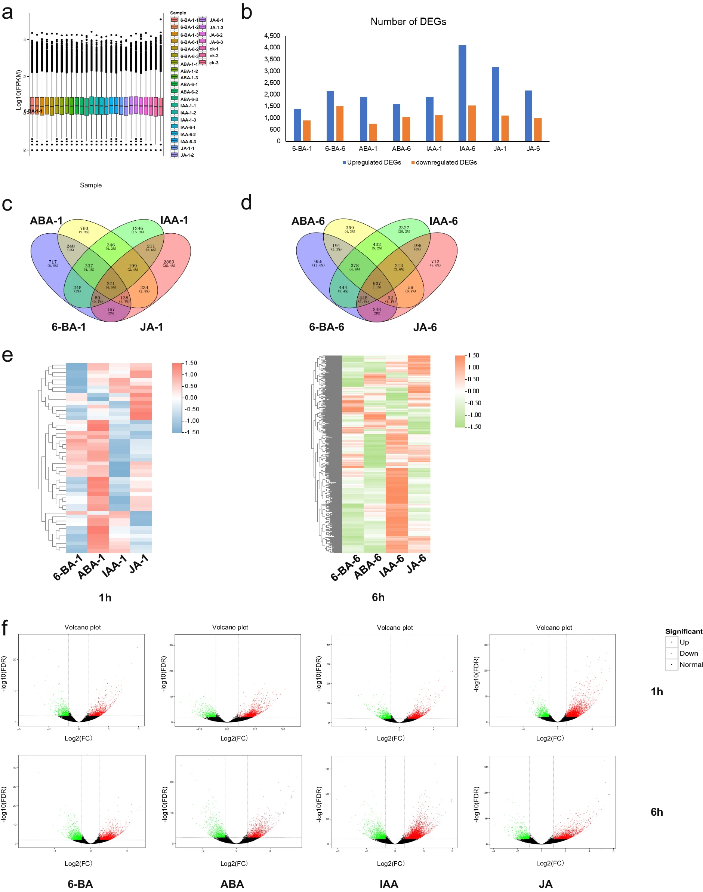
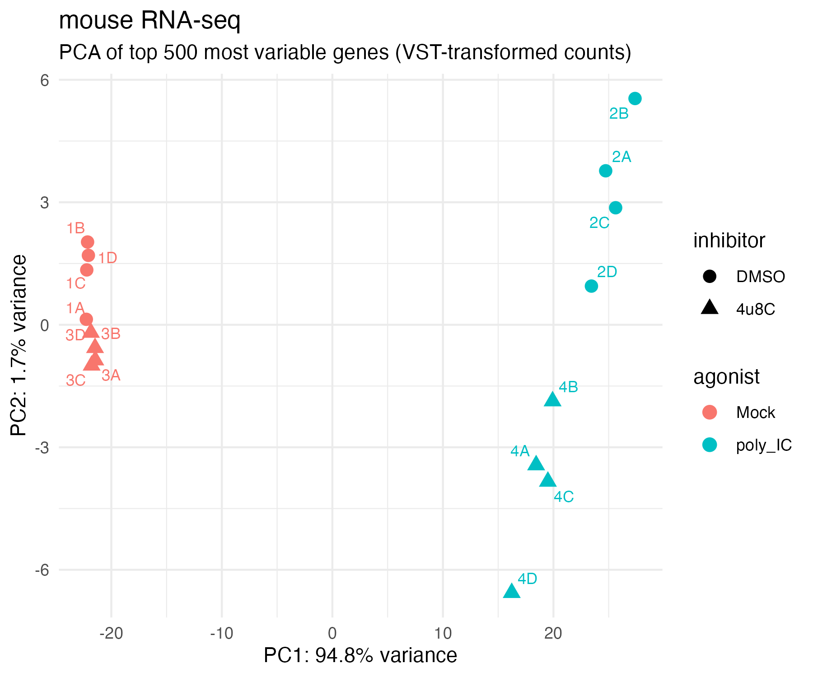
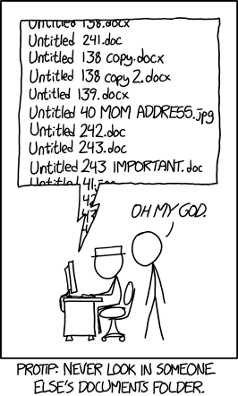
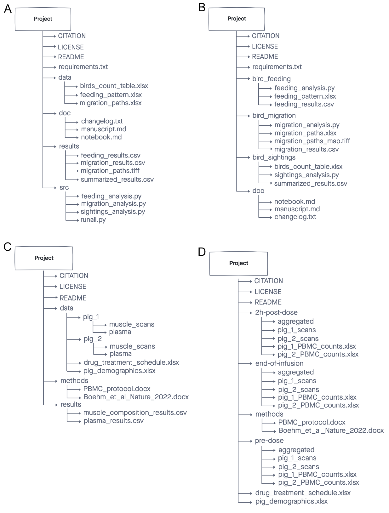

Managing Data & Projects for Genomics
Workshop: ~90 minutes hands-on · This page stays open for independent study and office-hours follow-up.
Learning Objectives
By the end of this workshop you will be able to:
- Describe what counts as "data" in a genomics project
- Explain the FAIR data principles and why they matter
- Identify what metadata to collect for genomics experiments
- Create a README file that documents a project directory
- Apply a consistent file and folder naming convention
Why This Matters

Computers are essential across all areas of modern science. We use them to collect, analyze, store, and share data — and to collaborate and write manuscripts. But most researchers are never taught the computational equivalent of basic lab skills: the everyday practices that keep data findable, interpretable, and reusable.
The result is familiar to almost everyone who has done research:
- You can't find a file you created six months ago.
- A collaborator sends you data with no explanation of what anything means.
- You receive a gene list from a paper and half the names don't match your dataset.
- You finish a project and realize the analysis cannot be reproduced.
These are not failures of intelligence — they are failures of systems. This workshop introduces practical, everyday practices to avoid them.
The collaborator who benefits most from good data practices is the one every researcher cares about: your future self.
Discussion — Before reading on...
Think about these questions with a partner or on your own:
- What was the last file or data item you couldn't find in your own work?
- What part of your workflow — wet lab → sequencing → analysis → writing — loses track of information most easily?
What Counts as Data?
The word "data" often conjures up images of spreadsheets and measurement tables. In genomics, the reality is far broader.
Exercise — Brainstorm: What are all the data types in your current project?
Take 3 minutes. For a genomics project you are working on (or have worked on), list every type of data involved. Then consider:
- How many of these are not currently documented anywhere?
- How many are kept in separate places or by separate people?
- Which one would be the biggest disaster if it got lost?
Discussion: Common data types in genomics projects
Data in a genomics project includes far more than gene expression tables:
| Category | Examples |
|---|---|
| Raw instrument data | FASTQ files, raw intensity files, mass spec outputs |
| Reference data | Genome assemblies (.fa.gz), annotation files (.gtf), transcript-to-gene maps |
| Metadata | Sample sheets, experimental design files, library prep records |
| Processed data | Aligned BAM files, count matrices, normalized expression tables |
| Analysis outputs | Differential expression results, PCA plots, volcano plots |
| Code and scripts | R Markdown files, Python scripts, Nextflow/Snakemake workflows |
| Documentation | README files, data dictionaries, lab notebooks, protocols |
| Results | Published figures, supplementary tables, manuscript drafts |
All of these are data. All of them should be tracked, documented, and locatable — even the ones stored on a remote server.
Figures and analyses count as data too — track how they were made and preserve the numerical data behind them.
Who is responsible for keeping track of your data?
When your data is spread across lab-owned servers, cloud based storage, collaborators, etc., who is responsible for knowing where the data lives and how it's managed?
Solution
You are responsible for knowing where your data lives, how it was generated, and what stage it is in.
Part 1: FAIR Data Principles

The FAIR Guiding Principles (published in Scientific Data, 2016) define best practices for data management and stewardship. Originally aimed at published datasets, they are equally valuable for everyday project management.
The goal: make data Findable, Accessible, Interoperable, and Reusable — by both humans and computers.
Before reading on...
For each letter in FAIR, write down what you think it means before reading the definitions below.
Findable
Data and metadata should be easy to locate and identify.
For published resources, this means using persistent identifiers: DOIs, PubMed IDs, GEO/SRA accession numbers, UniProt/Ensembl/NCBI gene IDs. Within a project, findability comes from:
- Consistent file naming — a standardized convention makes files scannable and searchable
- Logical folder structure — related files grouped together, with clear hierarchy
- Searchable metadata — a record that describes the dataset's location, contents, and context
If future-you or a collaborator can't find it, it's not FAIR.
Accessible
Published data and metadata should be retrievable via standard methods — downloading from NCBI, querying BioMart, fetching from a model organism database.
For project-level work, accessibility means:
- Files are in a known, documented location (local path, server path, cloud URL)
- Anyone with appropriate permissions can find and open those files
- The file format is readable without specialized software
- Data contents are interpretable without asking the creator
Interoperable
Data should be usable across tools and systems.
In practice:
- Use open, non-proprietary file formats —
.csv,.tsv,.fastq.gz,.bam,.vcfinstead of.xlsx,.ods - Store numeric data as numbers — never as PDFs or images of tables
- Always provide the underlying numerical data used to generate figures
A Special Note on Gene IDs
Gene names are not unique identifiers
Human-readable gene names like TP53, ACTB, or Gapdh are not safe to use as primary identifiers in analysis:
- Not unique across species —
TP53is the human gene;Trp53is mouse;tp53is zebrafish - Prone to case errors —
actbandACTBwon't match in a case-sensitive join - Subject to renaming — deprecated names cause silent mismatches when annotations update
Use standard, unique gene identifiers instead:
| ID Type | Example | Source |
|---|---|---|
| Ensembl Gene ID | ENSG00000141510 |
Ensembl |
| Entrez Gene ID | 7157 |
NCBI |
| UniProt ID | P04637 |
UniProt |
Always document the organism, annotation release, and annotation source alongside any gene list. It is fine to include human-readable names as a convenience column — just never use them as the join key in an analysis.
Reusable
Data should be ready for replication and reuse in new contexts. This requires:
- Detailed, structured metadata — biological sample details, experimental design, analysis tools, data locations
- A README file describing project organization and processing steps
- Tidy data structure — one variable per column, one observation per row, one value per cell
- Clear, descriptive column headers —
weight_grather thanwt
What Happens When Data Aren't FAIR?
The following three scenarios are adapted from real situations researchers encounter.
Scenario 1 — Uninterpretable file names
You receive a dataset from a collaborator:
/shared/Misc_Stuff/new/old/backup2/FASTQs/SeqData2/RNAseq_Run1/
├── A1.fastq.gz
├── A2.fastq.gz
├── ...
└── H12.fastq.gz
- Which biological samples are
A1.fastq.gzandH12.fastq.gz? - Is there a control group? How many replicates?
- Can you re-analyze this data in 6 months without emailing your collaborator?
Discussion
You cannot answer any of these questions from the file names or directory alone.
A1–H12are plate-well positions. Without a sample sheet there is no way to know which biological sample occupies each well.- There are no metadata files in the directory.
- Folder names like
Misc_Stuff,new/old/backup2give zero information about the project, organism, or date.
FAIR principles violated: Findable (no consistent naming), Accessible (not interpretable), Reusable (no metadata).
What would fix it: Rename files with a convention that encodes biological information; add a samplesheet.csv that maps file name → sample → condition → replicate; add a README.
Scenario 2 — Mismatched gene identifiers
You compile a gene list from three papers:
TP53
Actb
MYC
pax6
Gapdh
You try to look these up in your RNA-seq results, and only 2 out of 5 match.
- Why might these names fail to match?
- What should you have used instead?
Discussion
| Gene | Problem |
|---|---|
TP53 |
Human HGNC symbol — mouse equivalent is Trp53 |
Actb |
Mouse mixed-case — analysis pipeline may expect ACTB or Ensembl ID |
MYC |
Human symbol — correct species? |
pax6 |
Lowercase — annotation likely uses Pax6 |
Gapdh |
Mouse mixed-case — some annotations use GAPDH |
The fix: Use Ensembl gene IDs as primary identifiers. Include the human-readable name as a convenience column but join by ID. Always document the organism, annotation version, and ID source.
Scenario 3 — Undocumented analysis file
You receive DEGs_table.csv with 847 rows and columns:
gene baseMean log2FC lfcSE stat pvalue padj
List everything you would need to correctly interpret, share, or reproduce this analysis.
Discussion
At minimum you need:
- What tool was used — DESeq2? edgeR? Each calculates
log2FCdifferently - What the comparison is — which condition is treatment vs. control?
- What filtering was applied — count threshold? Minimum CPM?
- What normalization was used — default DESeq2 median-of-ratios? Something custom?
- What reference was used — genome build, annotation version, organism
- What statistical cutoffs — is
padjBenjamini-Hochberg? What threshold? - Who ran it and when — author, date, software version
A file named DEGs_table.csv with no accompanying README is not reusable. The more information provided, the better.
Key Points
- FAIR data is Findable, Accessible, Interoperable, and Reusable.
- These principles apply to everyday project data, not just published datasets.
- Poor naming, missing metadata, and non-standard identifiers are the most common FAIR failures.
Part 2: Metadata
What Is Metadata?
Metadata is data about your data — information that describes what the data are and how they were generated. Without it, a file is often uninterpretable.
A FASTQ file named A1.fastq.gz means nothing on its own. Add a sample sheet that maps A1 → Mock_DMSO replicate 1A, mouse J774A.1 macrophage cells, polyA-selected RNA-seq, 150bp PE — now the file is interpretable, reusable, and reproducible.
In genomics, metadata connects samples → sequencing → analysis → results. Without it, you cannot:
- Recreate analyses or compare across studies
- Identify which files belong to which biological replicates
- Map results back to experimental conditions
- Share data with a repository or collaborator
Types of Metadata
| Type | What it covers |
|---|---|
| Descriptive | What the dataset is — title, authors, abstract, keywords |
| Administrative | Who owns and manages it — PI, funder, data license, project dates |
| Structural | How the data is organized — sample sheet, column definitions, naming conventions, file formats |
Structural metadata is the most important for maintaining FAIR principles, and the most commonly missing.
What to Track in a Genomics Metadata File
| Category | Fields to include |
|---|---|
| Biological | Organism (species + strain), tissue/cell type, treatment/condition, sex, age, replicate number |
| Sequencing | Library prep kit, read length, paired vs. single end, sequencing platform, run date |
| Files | FASTQ file names, file path |
| Reference | Genome assembly (e.g., GRCm39), annotation version (e.g., Ensembl 114), GTF file used |
| Analysis | Pipeline name and version, key parameters, author, date run |
Before reading on...
Look at the figure below — a multi-panel summary figure from a published genomics experiment.
What can you tell about this experiment from the figure alone? What organism is it? What tissue or cell type? What do the sample labels 6-BA, ABA, IAA, JA mean? What was the experimental question? How confident are you?

A figure without metadata is incomplete data
Even with axis labels, sample codes, and p-values, this figure is not interpretable without its metadata. You cannot tell what organism, what tissue, what the treatments are, who ran the analysis, or what reference genome was used. The sample codes (6-BA = 6-benzylaminopurine, ABA = abscisic acid, IAA = indole-3-acetic acid, JA = jasmonic acid) are plant hormones — but only a plant biologist would know that, and only with a README would anyone know the organism, concentration, timepoints, or experimental context. Figures always represent numerical data behind them. That underlying data — and the metadata that describes it — must be preserved alongside every figure.
Exercise M.1 — What does a good sample sheet look like?
Below is the sample sheet from the RNA-seq project shown in the PCA above. Read through it and answer the questions.
| sample | fastq_1 | fastq_2 |
|---|---|---|
| Mock_DMSO_1A | Mock_DMSO_1A_S567_L002_R1_001.fastq.gz | Mock_DMSO_1A_S567_L002_R2_001.fastq.gz |
| Mock_DMSO_1B | Mock_DMSO_1B_S568_L002_R1_001.fastq.gz | Mock_DMSO_1B_S568_L002_R2_001.fastq.gz |
| Mock_DMSO_1C | Mock_DMSO_1C_S569_L002_R1_001.fastq.gz | Mock_DMSO_1C_S569_L002_R2_001.fastq.gz |
| Mock_DMSO_1D | Mock_DMSO_1D_S570_L002_R1_001.fastq.gz | Mock_DMSO_1D_S570_L002_R2_001.fastq.gz |
| poly_IC_DMSO_2A | poly_IC_DMSO_2A_S571_L002_R1_001.fastq.gz | poly_IC_DMSO_2A_S571_L002_R2_001.fastq.gz |
| poly_IC_DMSO_2B | poly_IC_DMSO_2B_S572_L002_R1_001.fastq.gz | poly_IC_DMSO_2B_S572_001.fastq.gz |
| Mock_4u8C_3A | Mock_4u8C_3A_S575_L002_R1_001.fastq.gz | Mock_4u8C_3A_S575_L002_R2_001.fastq.gz |
| Mock_4u8C_3B | Mock_4u8C_3B_S576_L002_R1_001.fastq.gz | Mock_4u8C_3B_S576_L002_R2_001.fastq.gz |
| poly_IC_4u8C_4A | poly_IC_4u8C_4A_S579_L002_R1_001.fastq.gz | poly_IC_4u8C_4A_S579_L002_R2_001.fastq.gz |
| poly_IC_4u8C_4B | poly_IC_4u8C_4B_S580_L002_R1_001.fastq.gz | poly_IC_4u8C_4B_S580_L002_R2_001.fastq.gz |
This table is stored as a .csv file: each row is one sample, the header row names the columns, and values are separated by commas.
Questions:
- From the sample names alone, what experimental factors can you identify?
- What information is missing that you would want for a complete metadata record?
- Below is the PCA generated from this dataset. Without the sample sheet, the sample IDs (
1A,2B, etc.) are uninterpretable. With it, what can you now say about the biology?

Discussion
1. What the sample names encode: Each name follows {agonist}_{inhibitor}_{groupReplicate}, encoding two treatment factors and replicate identity directly in the file name. The four conditions are:
| Agonist | Inhibitor | Condition | Interpretation |
|---|---|---|---|
| Mock | DMSO | Mock_DMSO (group 1) | Baseline — no treatment |
| poly_IC | DMSO | poly_IC_DMSO (group 2) | Inflammation induced |
| Mock | 4u8C | Mock_4u8C (group 3) | Inhibitor only |
| poly_IC | 4u8C | poly_IC_4u8C (group 4) | Inflammation + inhibition |
2. What's missing: The sample sheet links file names to biological samples, but complete metadata also needs: organism (mouse J774A.1 macrophage-like cells), library type (polyA-selected RNA-seq), read length (150bp paired-end), sequencing platform, and genome build/annotation version used for alignment.
A companion design file (design.tsv) provides structured analysis-level metadata that the R code can read directly:
| sample | condition | agonist | inhibitor | rep |
|---|---|---|---|---|
| Mock_DMSO_1A | Mock_DMSO | Mock | DMSO | 1A |
| poly_IC_DMSO_2A | poly_IC_DMSO | poly_IC | DMSO | 2A |
| Mock_4u8C_3A | Mock_4u8C | Mock | 4u8C | 3A |
| poly_IC_4u8C_4A | poly_IC_4u8C | poly_IC | 4u8C | 4A |
Note that sample names are identical between samplesheet.csv and design.tsv — this is intentional. The shared column allows the two tables to be joined in analysis without ambiguity.
3. PCA interpretation: With the sample sheet in hand, groups 1 (Mock_DMSO, pink circles) and 3 (Mock_4u8C, pink triangles) cluster tightly on the left — the agonist treatment, not the inhibitor, drives most of the variation (PC1: 94.8%). Groups 2 and 4 (poly_IC, teal) are far to the right. The inhibitor adds a small PC2 separation within the agonist groups. Without the sample sheet, 1A–4D are meaningless labels; with it, the biology is immediately readable.
README Files
A sample sheet records per-file metadata. A README file gives any reader the big picture of the entire project directory.
Why it matters: Makes your data findable and understandable without asking the creator. Prevents loss of institutional knowledge when team members leave. Required by most data repositories (GEO, SRA, Zenodo).
What to include:
| Section | What to write |
|---|---|
| Project overview | Purpose, organism, date created, point of contact |
| Directory structure | What each folder contains |
| Data descriptions | Sample sheet location, reference files, file formats |
| Analysis info | Tools used, pipeline version, key parameters, scripts |
| Version info | Genome build, annotation release, software versions |
Exercise M.2 — Evaluate a real README
The tabs below show the same README file two ways: as the raw plain-text .txt file a researcher would open in any text editor, and as a formatted preview. Read through it and answer the questions.
README – Example Genomics Project
Project: Mouse bulk RNA-seq (agonist & inhibitor study)
Date created: 2025-11-10
Project owner: C. Nobrega (cnobrega@mdibl.org)
Collaborators: J. Smith
Raw Data location: /projects/JohnSmith_mouse_bulk/data/
Last updated: 2025-11-11
───────────────────────────────────────────────
1. PROJECT OVERVIEW
───────────────────────────────────────────────
This project examines transcriptional changes in mouse macrophage-like
J774A.1 cells exposed to an inflammatory agonist and a chemical inhibitor
that modulates the cellular stress response.
Two treatment factors:
- Agonist (poly IC): induces intracellular inflammatory response.
- Inhibitor (4u8C): blocks IRE1 endonuclease activity of the UPR.
Four experimental conditions:
- Baseline: Mock & DMSO
- Inflammation: poly_IC & DMSO
- Inhibitor only: Mock & 4u8C
- Combined: poly_IC & 4u8C
───────────────────────────────────────────────
2. DIRECTORY STRUCTURE
───────────────────────────────────────────────
.
├── README.txt
├── data/ → sample sheet, raw FASTQs, reference files
└── analysis/
├── full_mouse_deseq.Rmd
├── input/
│ ├── design.tsv
│ ├── tx2gene.tsv
│ └── salmon.merged.gene_counts.tsv
└── output/
├── PCA.png
├── agonist_main_volcano.png
├── results_agonist_main.csv
└── results_inhibitor_main.csv
───────────────────────────────────────────────
3. DATA AND METADATA
───────────────────────────────────────────────
Sequencing metadata: data/samplesheet.csv
- Replicates: 4 per condition (total = 16)
- Library prep: standard polyA-selected RNA-seq
- File naming: {SampleID}_{S###}_{Lane}_{Read}_001.fastq.gz
───────────────────────────────────────────────
4. ANALYSIS DETAILS
───────────────────────────────────────────────
nf-core/rnaseq pipeline:
- version 3.19.0
- GTF: Mus_musculus.GRCm39.114.gtf.gz
- FASTA: Mus_musculus.GRCm39.dna.primary_assembly.fa.gz
DESeq2 analysis:
- Script: analysis/full_mouse_deseq.Rmd
- Outputs: analysis/output/
Questions:
- How many biological replicates per condition does this project have?
- If you needed to rerun the alignment, what genome build and annotation would you use?
- Where would you find the R code used to generate the figures?
- What information is missing that you would add to improve this README?
Discussion
- 4 replicates per condition (16 samples total) — Section 3.
- GRCm39 genome build, Ensembl release 114 GTF — Section 4.
analysis/full_mouse_deseq.Rmd— Section 4.- Things worth adding:
- R and DESeq2 version numbers specifically
- Statistical cutoffs used for DEG calling (adjusted p-value threshold, log2FC cutoff)
- Normalization method used in DESeq2
- Where raw FASTQs are stored if on a remote server (they are large)
- GEO or SRA accession once the project is published
Key Points
- Metadata is data about your data — without it, a file is often uninterpretable.
- A sample sheet links file names to biological samples and experimental conditions.
- A design file provides the structured per-sample metadata for analysis code to read.
- A README describes the big-picture context of an entire project directory.
- Keep all metadata files in the same folder as the data they describe — always.
Part 3: Project Organization
Good metadata tells you what your data is. Good project organization tells you where it lives. The two work together.
Before reading on...
Think about a project you are currently working on.
- How do you currently name your files? Could a collaborator understand your convention without asking you?
- Are all your project files in one place, or scattered across Desktop, Downloads, and email?
File Naming: What Makes a Good Name?

Before collecting or analyzing data, decide how you will name and organize files. Establishing a convention at the start is far easier than cleaning up a folder of inconsistently named files.
The main goals:
- Quick to find — you can locate a file in under 30 seconds
- Understand contents without opening the file
- Prevent duplication — no more
results_v2_FINAL_revised.csv - Enable collaboration — a teammate can navigate your project without a tour
A good naming convention is:
| Property | What it means |
|---|---|
| Consistent | Every file in a dataset follows the same pattern |
| Unique | The name identifies exactly one file |
| Informative | Gives a sense of the content without opening it |
| Machine-friendly | Works reliably in scripts, on any OS, and when sorted |
Rules for machine-friendly names:
- Use only letters, numbers, underscores (
_), hyphens (-), and periods (.) - No spaces — use
_or-; spaces break command-line tools - No special characters —
&,(,),!,#cause problems in scripts and URLs - Consistent case — mixing
UPPERCASEandlowercasecauses silent mismatches - Zero-pad numbers —
s01,s02, ...s12sorts correctly;s1,s2, ...s12does not - ISO 8601 dates —
YYYY-MM-DD(e.g.,2024-07-16) sorts chronologically and is unambiguous
Why ISO 8601?
YYYY-MM-DD is the only date format that sorts alphabetically in the correct chronological order, is internationally unambiguous, and works in all operating systems and scripting environments. 07-12 is July 12 in the US and December 7 in much of Europe.
Exercise: Fixing Messy File Names
The following files come from a real experiment containing light-response expression data from plants with different genotypes grown under different conditions.
The intended naming convention encodes:
- Light condition:
LD(long day) orSD(short day) - Genotype:
phyAorphyB - Media:
on(sucrose) oroff(no sucrose) - Timepoint:
tXX(zero-padded, e.g.t04) - Sample ID (optional):
sXX(zero-padded) - Date:
YYYY-MM-DD - Data type:
.rawor.norm
Before reading on...
Look at the messy file list below. Before reading any of the exercises, see how many distinct problems you can identify on your own.
2020-07-14_s12_phyB_on_SD_t04.raw.txt
2020-07-14_s1_phyA_on_LD_t05.raw.txt
2020-07-14_s2_phyB_on_SD_t11.raw.txt
2020-08-12_s03_phyA_on_LD_t03.raw.txt
2020-08-12_s12_phyB_on_LD_t01.raw.txt
2020-08-13_s01_phyB_on_SD_t02.raw.txt
2020-7-12_s2_phyB_on_SD_t01.raw.txt
AUG-13_phyB_on_LD_s1_t11.raw.txt
JUL-31_phyB_on_LD_s1_t03.raw.txt
LD_phyA_off_t04_2020-08-12.norm.txt
LD_phyA_on_t04_2020-07-14.norm.txt
LD_phyB_off_t04_2020-08-12.norm.txt
LD_phyB_on_t04_2020-07-14.norm.txt
SD_phyB_off_t04_2020-08-13.norm.txt
SD_phyB_on_t04_2020-07-12.norm.txt
SD_phya_off_t04_2020-08-13.norm.txt
SD_phya_ons_t04_2020-07-12.norm.txt
ld_phyA_ons_t04_2020-08-12.norm.txt
Exercise N.1 — What problem arises when the date is placed first?
Look at the first 9 files in the messy list. All of them start with a date (2020-07-14_..., AUG-13_...).
If you sort this folder alphabetically, what order do the files appear in? Is it easier or harder to find all LD phyA on samples compared to the clean list?
Solution
When dates come first, files sort by date of collection, not by experimental condition. All 2020-07-14 files appear together, then all 2020-08-12 files — regardless of whether they are from LD, SD, phyA, or phyB.
When the experimental variables come first (as in the clean list), all LD_phyA_on files appear together when sorted. This makes it faster to find related samples, verify you have all expected files, and notice if something is missing.
The fix: Put the most biologically meaningful variables first. Reserve the date for the end, where it serves as a tie-breaker without dominating the sort order.
Exercise N.2 — What date formats are used and why does it matter?
Find every different date format used across the 18 messy files. List them.
Solution
| File | Date format | Problem |
|---|---|---|
2020-07-14_s12_... |
YYYY-MM-DD |
✓ Correct |
2020-7-12_s2_... |
YYYY-M-DD |
Missing leading zero on month |
AUG-13_phyB_... |
MON-DD |
Month name abbreviation, no year |
JUL-31_phyB_... |
MON-DD |
Month name abbreviation, no year |
YYYY-7-12 and YYYY-07-12 sort differently — single-digit months appear after YYYY-09 and before YYYY-1. Files from AUG and JUL sort by the text of the month name, not chronologically. And dates with no year are meaningless once a project runs past 12 months.
The fix: Always use YYYY-MM-DD with zero-padding for month and day.
Exercise N.3 — Find the missing zero-padding and explain why it breaks sorting
Find the files where sample numbers (s1, s2) are not zero-padded.
Sort these three sample IDs alphabetically: s1, s2, s12. Then sort s01, s02, s12. What do you notice?
Solution
Messy files with missing zero-padding:
2020-07-14_s1_phyA_on_LD_t05.raw.txt—s1instead ofs012020-07-14_s2_phyB_on_SD_t11.raw.txt—s2instead ofs022020-7-12_s2_phyB_on_SD_t01.raw.txt—s2instead ofs02
Alphabetical sort of s1, s2, s12 → s1, s12, s2 (wrong — s12 sorts between s1 and s2)
Alphabetical sort of s01, s02, s12 → s01, s02, s12 (correct)
The fix: Zero-pad to a consistent width. If you have up to 99 samples, always use two digits: s01 through s99.
Exercise N.4 — Find all capitalization inconsistencies
How many different capitalizations of the same variable value can you find in the messy list? What goes wrong in a script?
Solution
| Variable | Inconsistent values found |
|---|---|
| Light condition | LD (correct), ld (in ld_phyA_ons_...) |
| Genotype | phyA, phyB (correct), phya (in SD_phya_off_..., SD_phya_ons_...) |
In a shell script, ls LD_* will not return ld_phyA_ons_t04_2020-08-12.norm.txt — the lowercase file is silently excluded. In R or Python, string grouping (group_by(light)) will create separate groups for "LD" and "ld" with no error or warning.
The fix: Pick a case convention and enforce it for every variable. Never mix cases for the same value.
Exercise N.5 — Spot the typo
Find the files that have a typo in the media field. What is the typo, and why is it dangerous?
Solution
Two files use ons instead of on in the media field:
SD_phya_ons_t04_2020-07-12.norm.txtld_phyA_ons_t04_2020-08-12.norm.txt
A script that groups by media == "on" will silently exclude these two files. The analysis runs to completion with no error — but the on group has 2 fewer samples than it should. The results are wrong without any indication that anything went wrong.
The fix: Enforce a controlled vocabulary for each variable field. Better yet: after creating a batch of files, generate a list of all unique values for each position in the name and verify them against the expected vocabulary.
Exercise N.6 — How many naming conventions are in use?
Group the 18 messy files by their naming convention (the pattern of fields and separators). How many distinct conventions are there?
Solution
At least three different conventions are used across 18 files:
| Convention | Example | Issues |
|---|---|---|
YYYY-MM-DD_sXX_geno_media_light_tXX.type.txt |
2020-07-14_s12_phyB_on_SD_t04.raw.txt |
Date first; no date in name for norm files |
light_geno_media_tXX_YYYY-MM-DD.type.txt |
LD_phyA_on_t04_2020-07-14.norm.txt |
No sample ID field |
MON-DD_geno_media_light_sX_tXX.type.txt |
AUG-13_phyB_on_LD_s1_t11.raw.txt |
Non-ISO date, no year, mixed field order |
Mixed conventions are the hardest to fix programmatically — you cannot write a single parser that handles all three. A script that extracts the light condition from position 1 works for convention 2 but fails for conventions 1 and 3.
Exercise N.7 — Write the README for the clean files
The clean naming convention is {light}_{genotype}_{media}_{timepoint}_{sample}_{date}.{datatype}.txt.
Write the key sections of a README that should accompany these data files. Think about what a new lab member would need to use them.
Reference README
README: Phytochrome Light Response Data
========================================
Project Description
-------------------
Expression measurements from experiments investigating light-dependent
responses of phyA and phyB genotypes under long-day (LD) and short-day
(SD) conditions. Samples collected at multiple timepoints and media
states (on sucrose / off sucrose).
File Naming Convention
----------------------
{light}_{genotype}_{media}_{timepoint}_{sample}_{date}.{datatype}.txt
light: LD (Long Day) or SD (Short Day)
genotype: phyA or phyB
media: on (sucrose) or off (no sucrose)
timepoint: tXX — two-digit zero-padded timepoint number
sample: sXX — two-digit zero-padded replicate ID (s00 = unspecified)
date: YYYY-MM-DD — collection or processing date
datatype: raw or norm
Directory Structure
-------------------
.
├── raw/ — unprocessed measurements from acquisition pipeline
├── norm/ — normalized data for downstream analysis
├── README.txt
└── samplesheet.txt
Notes
-----
Raw and normalized files should remain unmodified.
See samplesheet.txt for sample ID → date mapping and biological details.
README — Phytochrome Light Response Data
Project: Light-dependent expression measurements in phyA and phyB genotypes under LD and SD conditions. Multiple timepoints; on/off sucrose media.
File naming: {light}_{genotype}_{media}_{timepoint}_{sample}_{date}.{datatype}.txt
| Field | Values | Meaning |
|---|---|---|
light |
LD, SD |
Long Day, Short Day |
genotype |
phyA, phyB |
Plant genotype |
media |
on, off |
On or off sucrose |
timepoint |
tXX |
Zero-padded timepoint |
sample |
sXX |
Zero-padded replicate ID (s00 = unspecified) |
date |
YYYY-MM-DD |
Collection or processing date |
datatype |
raw, norm |
Raw or normalized data |
Directory: raw/ unprocessed · norm/ normalized · README.txt · samplesheet.txt
After the exercises, the final clean result separates raw and normalized files into subfolders and adds a README and samplesheet — so the date can be tracked in the samplesheet rather than embedded in every file name:
.
├── norm/
│ ├── LD_phyA_off_t04.norm.txt
│ ├── LD_phyA_on_t04.norm.txt
│ ├── LD_phyB_off_t04.norm.txt
│ ├── LD_phyB_on_t04.norm.txt
│ ├── SD_phyA_off_t04.norm.txt
│ ├── SD_phyA_on_t04.norm.txt
│ ├── SD_phyB_off_t04.norm.txt
│ └── SD_phyB_on_t04.norm.txt
├── raw/
│ ├── LD_phyA_on_t03.raw.txt
│ ├── LD_phyA_on_t05.raw.txt
│ ├── LD_phyB_on_t01.raw.txt
│ └── ...
├── README.txt
└── samplesheet.txt
Key Points
- Establish a naming convention before you start collecting data.
- Consistent separators, consistent case, zero-padded numbers, ISO 8601 dates.
- The same convention must apply to every file in a dataset — one exception breaks scripts.
- Document your naming convention in a README.
Folder Organization
Once you have good file names, folder structure determines how easy it is to find files and understand how they relate to each other.
Core principles:
- One project per directory, named after the project
- Separate raw from processed — treat raw data as read-only, put all outputs in a separate folder
- Group files by type —
data/,analysis/,results/rather than2024-07/,2024-08/ - Document the structure in the README
A widely-used template from Good Enough Practices in Scientific Computing (Wilson et al., 2017):
project_name/
├── data/ ← raw data and metadata (read-only)
├── results/ ← files generated during analysis
├── doc/ ← project documentation
├── src/ ← code and analysis scripts
└── README.txt ← project overview and directory guide

Four examples of well-organized genomics project directories. All separate raw data, analysis code, and outputs. All include a README. Each adapts the structure to the specific project.
Name files by content, not by position
Avoid naming files by their position in a manuscript (fig_3_a.png) or by sequential number (result1.csv, result2.csv). Both will change as the project evolves. Use descriptive names: PCA_all_samples.png, DEGs_agonist_vs_control.csv.
Exercise D.1 — Reorganize a messy project
Before reading on...
Look at the directory structure below. Before reading the problem analysis, write down every issue you can identify. Then think about what the improved structure would look like.
A collaborator shares the following project directory with you:
smith_lab_rna/
├── final analysis.R
├── Final_analysis_v2.R
├── Copy of Final_analysis_v2.R
├── A1.fastq.gz
├── A2.fastq.gz
├── B1.fastq.gz
├── B2.fastq.gz
├── DEGs.xlsx
├── figure 1.png
├── figure 1 FINAL.png
├── Figure1_revised.png
├── misc/
│ └── notes May.docx
├── OLD/
│ ├── results_old.csv
│ └── analysis_backup.R
└── refs/
├── genome.fa.gz
└── annotation.gtf.gz
Step through each problem:
- What is wrong with the raw data files (
A1.fastq.gz, etc.)? - What is wrong with the analysis scripts?
- What is wrong with the figures?
- What is wrong with
DEGs.xlsx? - What do
OLD/andmisc/tell you about the project's history? - What is missing entirely?
Step-by-step analysis
A1.fastq.gz, A2.fastq.gz, B1.fastq.gz, B2.fastq.gz — these are plate-well identifiers with no biological meaning. Without a sample sheet, there is no way to know what organism, condition, or replicate each file represents.
Fix: Rename files with biologically meaningful names (e.g., Control_rep1_S001_R1.fastq.gz) or add a samplesheet.csv that maps A1 → sample name → condition → replicate. The files and the sample sheet should live in a data/ subfolder.
Three analysis scripts:
final analysis.R— spaces in the name (breaks scripts), no version indicatorFinal_analysis_v2.R— different capitalization,v2implies history not recorded elsewhereCopy of Final_analysis_v2.R— a copy made by the OS instead of a version control system
Fix: Use version control (git) instead of _v2 and Copy of file naming. Pick one canonical script name: deseq_analysis.R or full_analysis.Rmd. Put scripts in a src/ or analysis/ folder.
figure 1.png— spaces, no version contextfigure 1 FINAL.png— "FINAL" almost never isFigure1_revised.png— different capitalization convention
Fix: Use descriptive names that reflect content, not manuscript position: PCA_all_samples.png, volcano_agonist_vs_control.png. Use version control or a results folder with clearly named subfolders for draft vs. publication figures.
DEGs.xlsx is a proprietary format that may render differently in different versions of Excel, can store hidden formatting, and is not accepted by most data repositories. Differential expression results are tabular data with no need for Excel features.
Fix: Export as DEGs_agonist_vs_control.csv with a descriptive name that encodes the comparison.
OLD/ and misc/ are signs that files were never properly versioned or documented. OLD/results_old.csv — old compared to what? misc/notes May.docx — May of which year? What notes?
Fix: Use git for version control so OLD/ is never needed. Move useful notes into a doc/ folder with descriptive names: notes_2024-05_alignment_issues.md. Delete what is truly obsolete.
There is no README anywhere in this directory. No sample sheet. No documentation of what this project is, what organism, what the conditions are, or how to use the files.
Improved structure
smith_lab_rna/
├── README.txt ← who, what, when, where, how
├── data/
│ ├── samplesheet.csv ← A1 → Control_rep1 → condition → rep
│ ├── A1.fastq.gz ← raw FASTQs (read-only)
│ ├── A2.fastq.gz
│ ├── B1.fastq.gz
│ ├── B2.fastq.gz
│ ├── genome.fa.gz ← reference files with data
│ └── annotation.gtf.gz
├── analysis/
│ ├── deseq_analysis.Rmd ← single canonical script
│ ├── input/
│ │ ├── design.tsv
│ │ └── gene_counts.tsv
│ └── output/
│ ├── PCA_all_samples.png
│ ├── volcano_A_vs_B.png
│ └── DEGs_A_vs_B.csv
└── doc/
└── notes_alignment_issues.md
What changed:
- One README at the top level
data/holds raw FASTQs (read-only), reference files, and sample sheetanalysis/holds the single canonical script and clearly separatedinput/andoutput/- All files have descriptive names with no spaces
- No
OLD/, nomisc/, no version-number suffixes, no copies
Key Points
- One project per directory. Separate raw data from analysis outputs.
- Group files by type (
data/,analysis/,doc/) not by date. - Avoid
OLD/,misc/, and version-number file names — use git instead. - Name files by what they contain, not by their position in a manuscript.
- Always include a README.
Workshop Summary — Quick Reference
Use this as a cheat sheet for your own projects. A print-friendly version is available as a standalone page:
Open printable quick reference
FAIR Data Principles
| Principle | Core idea | What to do |
|---|---|---|
| Findable | You and others can locate the data | Consistent file names, logical folder structure, searchable metadata |
| Accessible | You can open and read the data | Documented file paths, readable formats, clear metadata |
| Interoperable | The data works across tools | Open formats (.csv, .tsv), standard gene IDs (Ensembl), no proprietary features |
| Reusable | Others can repeat or build on your analysis | README, sample sheet, documented parameters, tidy data structure |
Metadata Essentials
| What to create | What it contains | Where it lives |
|---|---|---|
Sample sheet (samplesheet.csv) |
File name → sample name → condition → replicate | data/ |
Design file (design.tsv) |
One row per sample: condition, treatment variables, replicate — structured for analysis code | analysis/input/ |
README (README.txt) |
Project overview, directory structure, tool versions, how to use the files | Project root |
Always document: organism + strain, genome build + annotation version, pipeline name + version, statistical cutoffs used.
File Naming Rules
{variable1}_{variable2}_{variable3}_{YYYY-MM-DD}.{ext}
| Rule | Good | Bad |
|---|---|---|
| No spaces | Mock_DMSO_rep1.fastq.gz |
Mock DMSO rep1.fastq.gz |
| No special characters | results_v2.csv |
results (v2)!.csv |
| Zero-pad numbers | s01, s02, s12 |
s1, s2, s12 |
| ISO 8601 dates | 2024-07-16 |
07-16-24, JUL-16 |
| Consistent case | LD_phyA, LD_phyB |
LD_phyA, ld_phyb |
| Informative, not positional | PCA_all_samples.png |
fig_3_a.png |
Project Directory Template
project_name/
├── README.txt ← who/what/when/where/how; directory guide
├── data/ ← raw data + metadata (READ-ONLY)
│ ├── samplesheet.csv
│ └── *.fastq.gz
├── analysis/ ← code, intermediate inputs, outputs
│ ├── script.Rmd
│ ├── input/
│ └── output/
├── doc/ ← notes, protocols, documentation
└── results/ ← final figures and tables for the paper
One Thing to Fix This Week
| If you don't have... | Do this |
|---|---|
| A README | Write one for your most-used project. Start with: what is it, who owns it, where is the raw data. |
| A sample sheet | New .csv: sample name · condition · replicate · file name. |
| Consistent file names | Write down the convention you wish you had used. Apply it to new files going forward. |
| Open format results | Export your key analysis result from .xlsx to .csv. |
| Documented gene IDs | Add a id_source column: e.g., Ensembl_114_GRCm39. |
Questions? Contact the CGDS Core — CGDS@mdibl.org